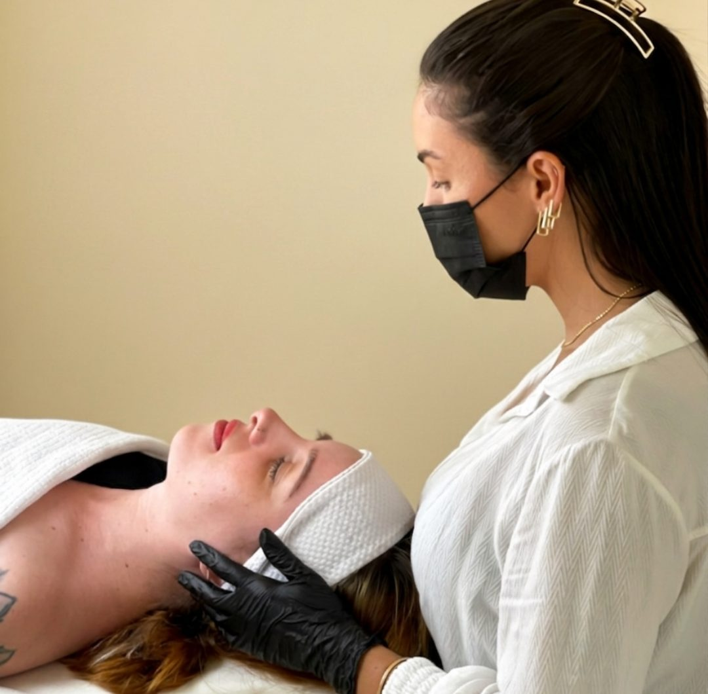
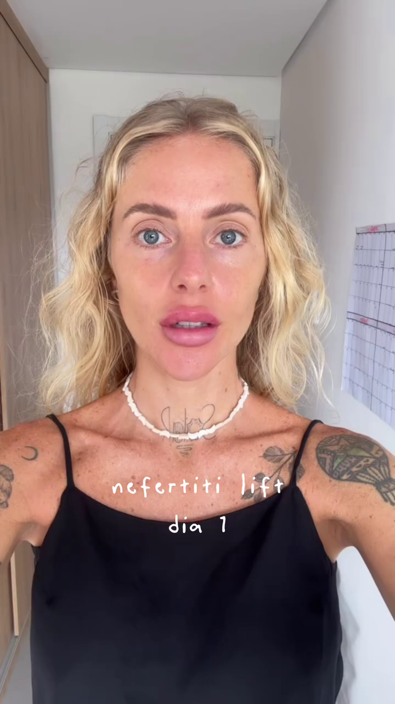
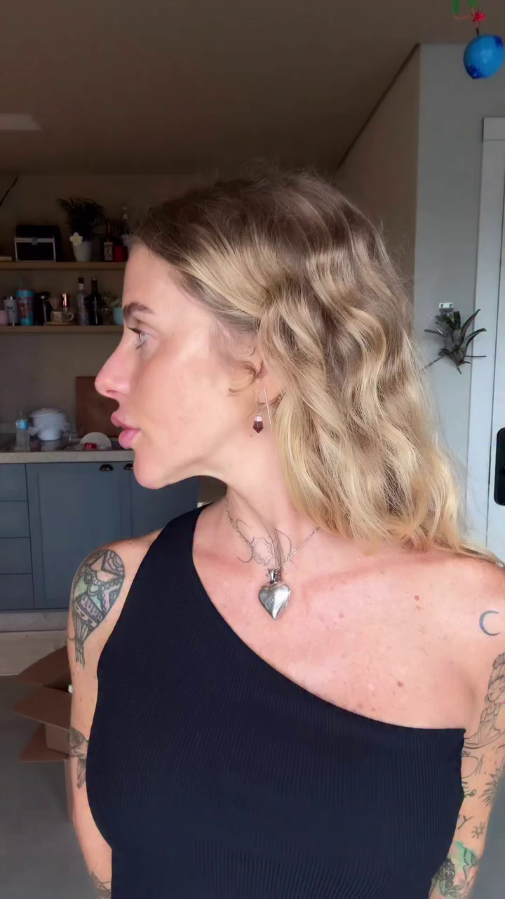
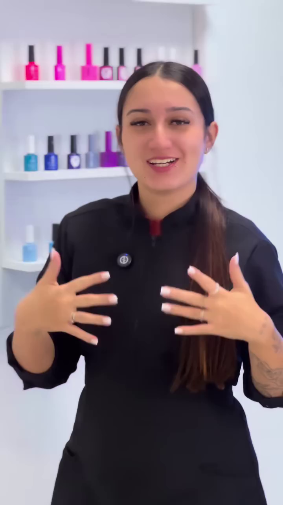
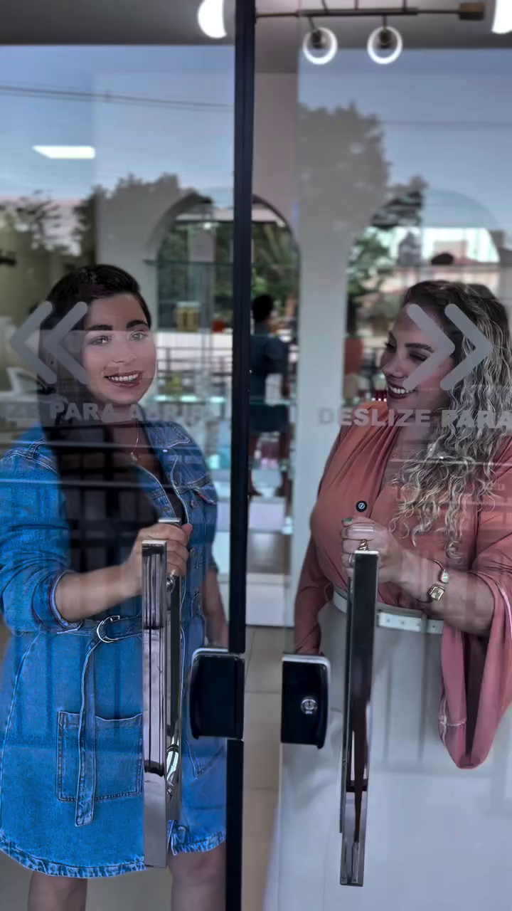
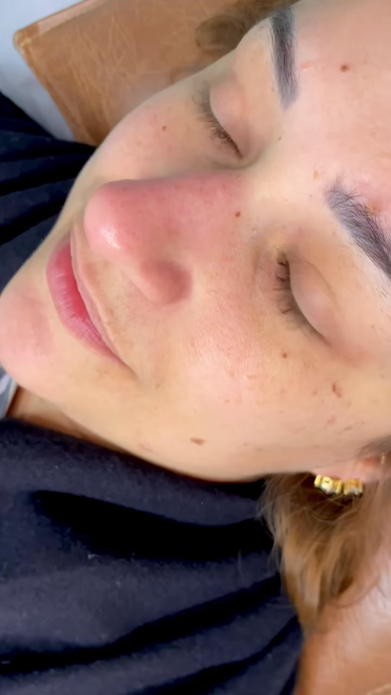
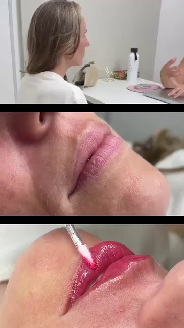
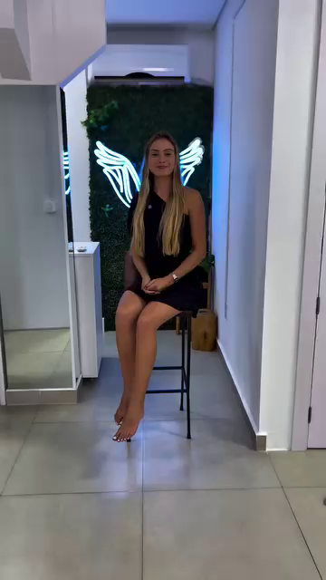
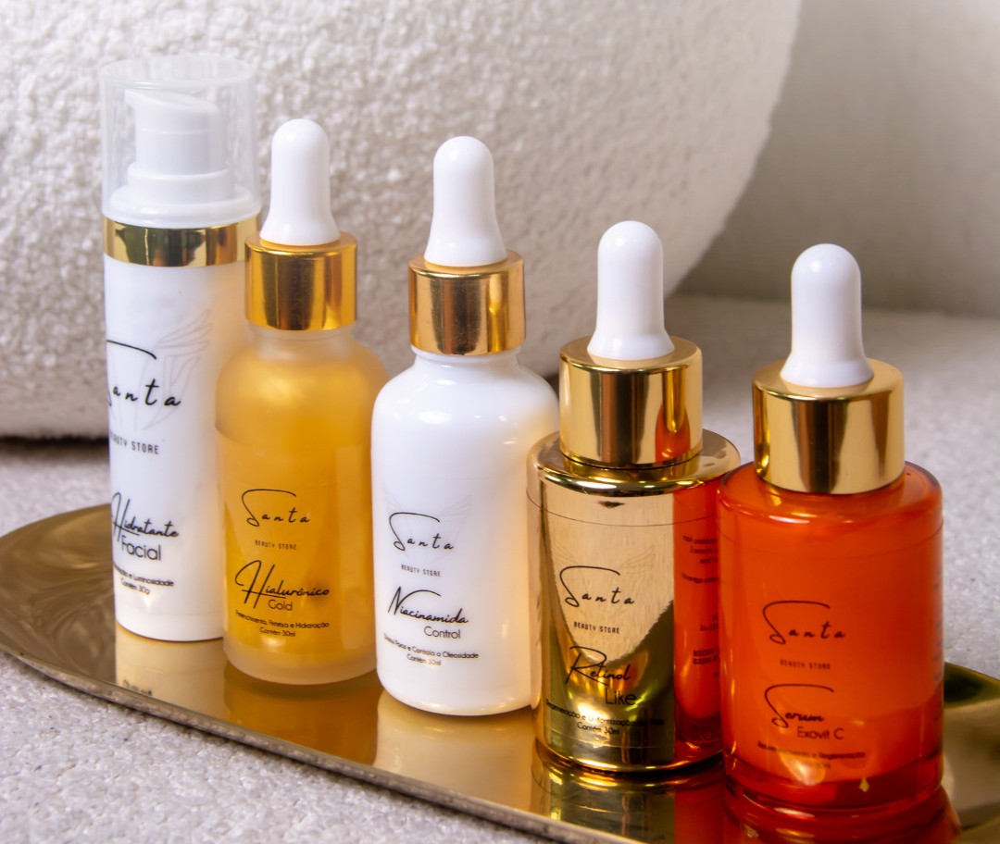

Cuide-se com quem vai te devolver mais você — não uma versão artificial de você.
Na Santa Estética, cada tratamento é planejado para realçar o que você já tem. Harmonização facial, cuidados com a pele, unhas, cílios e sobrancelhas — tudo em um único espaço, com especialistas de verdade.
Avaliação gratuita · Sem compromisso · Respondemos no mesmo dia

Resultado que as pessoas percebem, mas não sabem nomear. Só sentem que você está bem.
Você não quer virar outra pessoa. Você quer acordar, se olhar no espelho e gostar do que vê — sem filtro, sem maquiagem pesada, sem precisar esconder nada. É exatamente isso que a Santa entrega: tratamentos planejados para a sua face, o seu corpo, a sua essência.
Procedimentos realizados por biomédica credenciada — nada improvisado
Você sai mais você — resultado natural que realça sem exagerar
Protocolo exclusivo de laser + hidratação criado pela própria equipe
Linha própria Santa Beauty — cosméticos criados com base nas suas necessidades
Avaliação gratuita sem compromisso — você entende o que precisa antes de decidir
Tudo em um lugar só: harmonização, pele, unhas, cílios e sobrancelhas
Tratamentos que respeitam a sua essência
Cada procedimento começa por uma escuta cuidadosa. Só então começa o cuidado.
Harmonização Facial
Botox, preenchimentos e procedimentos aplicados pela Dra. Amanda Sarda, biomédica, com foco em naturalidade e segurança.
Rosto mais descansado, harmonioso e expressivo — sem que ninguém consiga dizer o que foi feito.
Laser Lavieen + Protocolos de Pele
Tecnologia de laser para renovação e uniformização da pele, combinada com hidratação intensa em protocolo exclusivo criado pela equipe da Santa.
Pele com brilho real, textura uniforme e viço — sem marcas, sem cravos, sem opacidade.
Ultrassom Microfocado
Tratamento não invasivo para firmar e erguer o contorno do rosto sem cirurgia, sem recuperação e sem agulha.
Efeito lifting visível com resultado progressivo e duradouro.
Limpeza de Pele
Limpeza profunda que desobstrui os poros e prepara a pele para absorver ativos com eficiência.
Pele limpa e respirando — base para qualquer skincare funcionar de verdade.
Unhas — Blindagem e Gel
Blindagem de mãos e pés e esmaltação em gel com acabamento natural e duradouro.
Unhas saudáveis, elegantes e prontas para qualquer ocasião — sem aquele aspecto artificial.
Cílios, Sobrancelhas e Brow Lamination
Extensão de cílios (preto e marrom), brow lamination e design de sobrancelhas para um olhar marcante e natural.
Acorda pronta. Olhar definido sem depender de maquiagem.
Simples, sem burocracia, no seu ritmo
Você chama no WhatsApp
Sem formulário, sem burocracia. Chama a gente, conta o que te incomoda e agendamos o melhor horário para você.
Avaliação gratuita com especialista
A Dra. Amanda ou a especialista responsável vai entender o seu caso, explicar o que faz sentido para você e montar um plano personalizado. Sem pressão, sem empurrar procedimento que não precisa.
Tratamento no seu ritmo
Você decide o que quer fazer e quando. O procedimento é realizado com conforto, segurança e os melhores produtos do mercado.
Você sai diferente — no jeito certo
Mais descansada, mais leve, mais você. Resultado que as pessoas percebem, mas não sabem explicar o que mudou.
Veja o que acontece quando o cuidado respeita a sua essência.
Casos reais, pacientes reais, resultados reais. Sem edição excessiva, sem filtro.

Contorno da mandíbula com botox

Resultado natural e sutil

Blindagem com acabamento natural

Seu santo momento começa aqui
Pele sem cravos, limpa e renovada

Resultado que fala por si

Naturalidade que realça o que já é lindo
Olhar marcante sem exagero

Pés cuidados como você merece
O que as santíssimas dizem
"Realizei uma limpeza de pele há alguns dias e fiquei extremamente satisfeita com o resultado! Além do ambiente ser muito agradável e limpo, a recepcionista é um amor! Totalmente sem dor, sem vermelhidão além do normal, e ainda estou vendo a melhora da pele a cada dia que passa. A profissional me explicou todos os passos e cuidados que eu devo ter."
Anissa
Google Reviews · Verificado
"Excelente atendimento, desde a Carol na recepção até o procedimento com a Tai e a avaliação com a Amanda. Super recomendo, você realmente será bem tratada e os serviços são de excelente qualidade. Parabéns a toda equipe!"
Ana Gomes
Google Reviews · Verificado
"Sou completamente apaixonada por esse lugar. São cuidadosas desde a primeira conversa no WhatsApp até o procedimento final. Além de ter um leque gigante de opções, são todas de extrema qualidade — feito tudo com muito amor. Recomendo de olhos fechados!"
Bianca Bersellini
Google Reviews · Verificado
Especialistas reais, resultados reais
A Santa Estética nasceu da crença de que cuidar de si não é luxo — é necessidade. E que resultado de verdade exige especialista de verdade.
Dra. Amanda Sarda
Biomédica — Harmonização FacialÀ frente dos procedimentos estéticos faciais, a Dra. Amanda tem foco em naturalidade e segurança. Cada protocolo que ela aplica começa por uma escuta cuidadosa: ela quer entender o que você quer, mas principalmente o que você não quer.
Especialidade: botox, preenchimentos, nefertiti lift e avaliação individual.
Tai Zilli
Especialista em Saúde da PeleOs cuidados com a pele são conduzidos pela Tai Zilli, que desenvolveu ao lado da Dra. Amanda o protocolo exclusivo Lavieen — laser + hidratação intensa — um tratamento que você só encontra na Santa.
Especialidade: laser Lavieen, protocolos de pele, limpeza e tratamento para pele oleosa.
Carla Castro
Especialista em Sobrancelhas e CíliosPara completar, a equipe conta com a Carla Castro para brow lamination, extensão de cílios e design de sobrancelhas — tudo no mesmo espaço, com o mesmo padrão de cuidado.
Especialidade: brow lamination, extensão de cílios (preto e marrom), design de sobrancelhas.
Santa Beauty
A Santa Beauty existe porque as clientes pediam: "o que eu uso em casa para manter o resultado?" A resposta virou uma linha de cosméticos — espuma de limpeza, séruns, rejuvenescedores, gloss hidratante — desenvolvida pelas próprias especialistas da clínica. Não é revenda. É continuidade do tratamento.
Conhecer a linha Santa Beauty
O que nos diferencia — de verdade
Biomédica credenciada à frente da harmonização
Qualquer pessoa pode comprar equipamento estético e anunciar procedimentos. Dra. Amanda Sarda é biomédica — o que significa que ela tem formação técnica e legal específica para aplicação de toxina botulínica e preenchimentos. Você não está apostando. Está se cuidando com quem pode fazer isso com segurança.
Protocolo de pele exclusivo — não existe em nenhuma outra clínica
O protocolo Lavieen da Santa não é um pacote comprado de fornecedor. Foi desenvolvido pela Dra. Amanda e pela Tai com base em anos de atendimento e nas necessidades específicas das pacientes de Florianópolis. Você não recebe um protocolo genérico — recebe o que foi testado, ajustado e validado aqui.
Resultado natural como princípio — não como slogan
"Natural" virou clichê em clínica de estética. Na Santa, é política real: a Dra. Amanda não aplica o que não faz sentido para o seu rosto. A conversa começa por o que você quer evitar, não só pelo que você quer mudar. Quem sai da Santa sai diferente — no jeito que devia sempre ser.
Tudo em um único lugar, com equipe integrada
Harmonização, pele, laser, unhas, cílios e sobrancelhas no mesmo espaço. Com profissionais que se conhecem e que se comunicam sobre o seu caso. Não é conveniência — é consistência no cuidado.
Linha própria de cosméticos desenvolvida pela equipe
A Santa Beauty existe porque as clientes pediam: "o que eu uso em casa para manter o resultado?" A resposta virou uma linha de cosméticos desenvolvida pelas próprias especialistas da clínica. Não é revenda. É continuidade do tratamento.
Respostas antes de você precisar perguntar
Você agenda pelo WhatsApp. Na consulta, a especialista vai ouvir o que te incomoda, avaliar o seu caso e te explicar o que pode ser feito — com expectativa realista de resultado, tempo de procedimento e cuidados pós-tratamento. Sem pressão para fechar na hora. Você decide no seu tempo.
Essa é exatamente a razão pela qual a avaliação começa com uma pergunta diferente: não "o que você quer mudar", mas "o que você não quer de jeito nenhum". O resultado da Santa é planejado para ser imperceptível para quem olha de fora — só quem conhece você percebe que algo melhorou, mas não consegue nomear o quê.
Os procedimentos aplicados na Santa não têm tempo de recuperação que interfira na rotina. Botox e preenchimentos são feitos com anestesia tópica — a sensação é mínima. Você pode agendar para uma tarde e voltar ao trabalho no dia seguinte. A avaliação gratuita é o momento para tirar todas as dúvidas sobre o procedimento específico que você está considerando.
Em média de 4 a 6 meses, variando por pessoa e pela região tratada. Na avaliação, a Dra. Amanda vai te dar uma estimativa mais precisa para o seu caso específico.
Não. Muitas clientes começam com um procedimento e ampliam o cuidado ao longo do tempo, à medida que vão confiando no resultado. A avaliação serve justamente para entender o que faz mais sentido para o seu momento — não para te convencer a fazer o máximo possível.
A clínica fica na R. do Gramal, 1650 - sala 2, no Campeche, Florianópolis/SC (CEP 88063-100). Atendemos clientes de todo Florianópolis e Grande Florianópolis.
É a linha de cosméticos desenvolvida pelas próprias profissionais da Santa Estética. Criada a partir das necessidades reais das clientes, inclui espuma de limpeza facial, séruns, rejuvenescedores e gloss hidratante. Disponível na clínica — são os mesmos produtos que a equipe recomenda para manutenção dos resultados em casa.
Você chegou até aqui porque tem algo que te incomoda quando se olha no espelho. Não precisa continuar convivendo com isso.
Agendar meu santo momentoAvaliação gratuita · Sem compromisso · Respondemos no mesmo dia